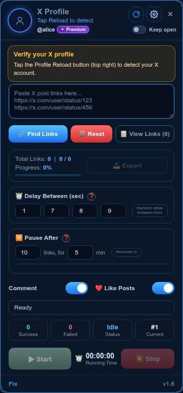

RELEASE NOTESSmall changes.
Better control.
LATEST WEBSITE CHECKOUT · EXTENSION BUILD v1.9
One step at a time. One credit per comment.
Credit topups now guide you through destination, quantity, Binance Pay, verification and completion. Use a purchased X username to top up a friend without sharing an Access Key. Only one step is shown at a time.
New bulk credit prices
20,000–49,999 credits: $0.00015 each. 50,000+ credits: $0.00014 each. The selected quantity’s rate applies to the whole order. The server calculates the final amount.
Your QR, a clearer payment flow
Bot purchases and credit topups show the FixAsif merchant QR, the exact USDT amount, a copyable Binance UID and clear instructions for finding the Binance Pay Order ID. “I have paid” moves to verification; it never marks an order paid.
Link Engage: comments required, Likes optional
In extension v1.9, the Comment switch is removed. Comments are required even when Like is off. Earlier saved Comment-off settings no longer disable comments.
Open the new topup → · English v1.9 guide →
v1.9 is a prepared extension build, not a claim of Chrome Web Store approval. The Store version must be checked before installation. Website checkout improvements are separate from extension approval.
2026-10-13 · v1.8 previous update, ready for Store submission
Main-panel timing and private gift topups
Delay and pause stay on the main panel
Delay Between (sec) and Pause After are back in their original Link Engage queue positions. The gear holds Memory, reply source, balance and the English guide.

Top up by Access Key or X username
A friend can pay without seeing your key. Username lookup requires a verified paid bot purchase and an active Access Key. If more than one key qualifies, the newest active purchased key receives the credits. The key and private balance are not revealed; an order locks its destination key before payment.
The same post and instructions
Fix Credits and My API now use identical prompt composition for the post text, Reply Style, tone and keywords. Our service key stays in Worker Secrets. Reply preparation avoids repeated welcome-credit writes and groups independent checks to reduce unnecessary wait. AI generation and network latency can still vary; one-second replies are not guaranteed.
Open the English v1.8 guide →
Chrome Web Store currently serves v1.6. These controls require v1.8 after approval and installation.
2026-10-13 · v1.7.2 previous update
2026-10-13 · v1.7.2 latest update, ready for Store submission
Buy credits for any purchased key
Buy Credits now sits beside Add to Chrome and Buy Access Key in both main purchase sections, and beside the dashboard purchase buttons. Enter and check an Access Key first. Any signed-in website account can pay, including a friend. Credits go to the checked key; ownership and the linked X username never change.
English guides and Memory pictures
All new public and in-extension guides are in English. The picture guide has a dedicated Memory tab showing the gear location, saved count, on/off, Reset memory, source and balance. The offline guide explains Memory first, then Link Engage.
Open the picture guide → · Open the English PDF →
Timing and navigation, clarified
Link Engage accepts 0 and 1-second delay values. Home/Back navigation is grouped after 3, 4, 5, 6 or 9 processed links, not every comment. Fast waits do not remove page loading time or X restrictions.
Chrome Web Store currently serves v1.6. These controls require the latest update after approval and installation.
2026-10-13 · v1.7.1 previous update
2026-10-13 · v1.7.1 ready for Store submission
Settings where you expect them
The Chrome Web Store currently serves v1.6. The controls below require the new v1.7.1 update after approval and installation.
Open the gear beside Profile Reload
The gear now opens a separate settings view: 24-hour Memory, saved link count, Memory on/off, Reset memory, current Fix balance, reply source, delays and pause controls. Back returns to the queue. Ordinary Reset clears the queue, not Memory.
Know which balance pays for replies
The extension popup clearly labels the active source. Fix Credits reserves one credit per generated reply. My API uses your own API account and does not spend Fix Credits, even when your API key is missing or invalid. Like-only does not generate a reply and uses no reply credit. An already in-flight request can finish using its previously selected source; stop the queue before changing source.
How it works, offline
The button at the bottom of gear settings opens an offline English guide, with Memory first and Link Engage second. It supports printing, Save PDF and a packaged PDF download.
Open the English Memory and Link Engage PDF ↗
A clearer referral dashboard
Pending signups, successful referrals, queued rewards and paid rewards are separate. Copy your invite link or referral code, check the receiving wallet, and follow each referral from signup to owner review to confirmed payment. Rewards use USDT on BNB Smart Chain/BEP20. Telegram owner confirmation is required. Insufficient USDT or BNB keeps an approved reward queued, not paid.
2026-10-13 · v1.7 original feature notes
2026-10-13 · v1.7 update in preparation
Credits, link memory and more choice
Chrome Web Store currently serves v1.6. These v1.7 features become available after the new extension is approved and installed. Server-side credit and referral features are rolling out separately.
Choose how you reply
Select Fix Credits or My API. Your own API stays supported. Every purchased key receives 300 welcome credits once. Topups start at 500, with exact amounts, username checks and one-use payment verification.
Link Engage remembers for 24 hours
Find Links removes duplicate status IDs, links from your own username and previously attempted links in memory. Both completed and failed attempts are saved. Queue Reset does not clear memory. Expired entries are removed when Find Links is used. Memory can be switched off or reset separately, and is stored locally per X account.
Like, comment, or both
Enable either action or both. You cannot switch both off. Like-only runs do not use reply credits. Delay fields now accept 0 seconds; page loading and verification still take time. Zero delay is not a safety guarantee and may increase rate-limit risk. Default delays remain unchanged.
Less navigation
Optional Home and Back navigation runs after groups of 3, 4, 5, 6 or 9 processed links rather than every link. This changes navigation frequency, not platform rules or account safety.
Keep your prompt focused
Reply Style supports up to 500 characters. The settings panel displays a live counter.
Referral rewards with owner review
Create a link with your BEP20 wallet address. The wallet address is not part of the link. Signups start as pending. A first bot purchase qualifies for a $1 reward, subject to anti-abuse review. Telegram Confirm approves a payout; the dashboard does not label it paid until a transfer is confirmed. Transfers require owner confirmation, sufficient USDT and BNB, and an on-chain receipt.
v1.6 · LIVE IN CHROME WEB STORE
The stable release
Reduced extension permissions, silent licence rechecks and existing user-owned API support. Open Chrome Web Store ↗